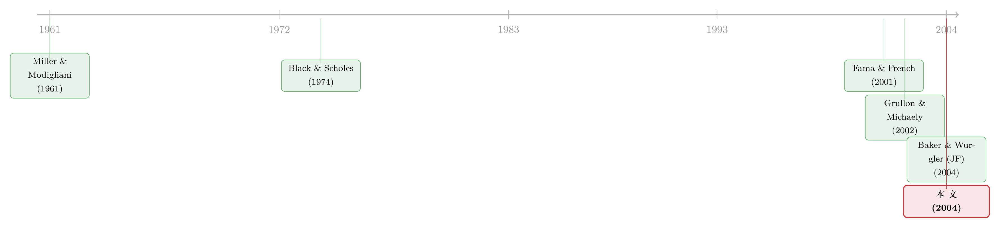

股利忽隐忽现的四十年，竟都写在一个「溢价」里
本文读的是 Baker & Wurgler (2004, Journal of Financial Economics)：1963–2000 年间，企业「愿不愿意发股利」其实经历了四次涨落，而每一次都与一个叫「股利溢价（dividend premium）」的市场信号严丝合缝地对齐——当市场愿意为发股利的公司多付一点钱，发股利的公司就变多；反过来则变少。换句话说，老板们是在「看投资者的脸色」决定要不要发钱。
1 引言：一个被反复讲述、却讲了一半的故事
先讲一个大家都熟悉的故事。
2001 年，Fama 和 French 写了一篇影响深远的论文，标题直白得有点刺眼——《Disappearing Dividends》（消失的股利）。他们发现，在 1978 到 1999 这二十多年里，他们 Compustat 样本中发放现金股利的公司比例，从 67% 一路跌到了 21%。股利，似乎正在从美国公司的财务报表上集体「蒸发」。
这件事当然可以有一个无聊的解释：也许只是上市公司「换了一拨人」。近些年新上市的公司大多又小又不赚钱、却顶着诱人的成长故事——这类公司本来就不该发股利。于是发股利的公司占比下降，纯粹是「成分变了」，是一个构成效应（composition effect）。
但 Fama 和 French 把这层因素剥掉之后，发现剩下的部分依然在下沉。他们给这个剥干净后的残差起了个名字，叫做「发放股利的倾向（propensity to pay dividends）」。即便控制了公司的规模、盈利、成长机会，公司主动选择发股利的意愿本身，也在 1978 年之后持续下滑。从这个意义上说，股利是真的在「消失」。
故事讲到这里，通常就结束了。一个漂亮的事实，一个干净的残差，一个时代的注脚。
但 Baker 和 Wurgler 偏偏不甘心。他们追问的是一个更刁钻的问题：这个「倾向」为什么会变？ 它不是凭空起落的，背后总该有一只手在推。而这只手，会不会就是市场本身？
2 一个被忽略的可能：老板在迎合投资者
要理解他们的答案，得先回到一个更老的争论。
Miller 和 Modigliani (1961) 早就证明，在一个没有摩擦的世界里，股利政策无关紧要（dividend irrelevance）——公司发不发钱，不改变它的价值。Black 和 Scholes (1974) 则进一步给出了「客户群均衡（clientele equilibrium）」的视角：不同投资者对股利有不同偏好，但在均衡里，供需两端会自动出清，没有哪家公司能靠调整股利政策占到便宜。
Baker 和 Wurgler 在另一篇配套论文《A Catering Theory of Dividends》(2004, Journal of Finance) 里，把这幅静态的均衡图景拆开了一道缝。他们的「迎合理论（catering theory）」说的是：
当不知情的投资者对「发股利的公司」需求高涨（或低迷）、同时 MM 式套利又受限时，市场会在发股利的股票上贴出一个价格溢价（或折价）。处在边际上的公司，便有动机去迎合这种隐含的需求——投资者追捧发股利的股票，我就发；投资者冷落它，我就不发。
注意这套逻辑的精髓：它本质上是 Black-Scholes 那个客户群均衡的失衡版本（disequilibrium version）。区别在于，它允许情绪（sentiment）扮演角色，允许价格在一段时间里「错」着，而公司则追着这个错误跑。
于是问题就变得很具体了：如果迎合理论是对的，那么衡量「投资者此刻有多想要股利」的某个指标，就应该能解释「发放股利的倾向」为什么时起时落。
接着，一个自然的问题是——怎么量这个「投资者有多想要股利」？
3 把「想要股利的程度」量成一个数：股利溢价
Baker 和 Wurgler 的做法朴素得近乎粗暴，却恰恰因此可信。
每一年，他们分别计算发股利公司（payers）的加权平均市值账面比（market-to-book ratio），和不发股利公司（nonpayers）的加权平均市值账面比，然后取两者对数之差。这个差，就是「股利溢价（dividend premium）」，记作 PD-ND：
$$ PD\text{-}ND_t = \log\!\big(\overline{M/B}\,^{payers}_t\big) - \log\!\big(\overline{M/B}\,^{nonpayers}_t\big) $$
直觉很清楚。如果市场此刻偏爱发股利的公司，就会把它们的价格（相对账面价值）抬高，PD-ND 为正；反之，如果市场把成长型的不发股利公司捧上了天，PD-ND 就转负——这时市场实际上是在为「不发股利」付溢价。
这个指标当然「粗」。但 Baker 和 Wurgler 在配套论文里验证过它的成色：它与 Citizens Utilities 公司那个独特的双重股权结构所隐含的股利溢价高度相关，与股利发起公司公告日的平均市场反应显著正相关，还与「做多 payers、做空 nonpayers」组合的未来收益显著负相关。一把粗尺子，但量的方向是对的。
有了这把尺子，真正关键的一步来了。
4 真正关键的一步：把「四次」涨落对上「四次」溢价
Baker 和 Wurgler 做的第一件事，是把 Fama-French 的方法往前推。Fama-French 只看了 1978 年以后，而他们把样本一直拉回到 1963 年。
样本沿用 Fama-French 的口径：Compustat 中有完整财务数据、CRSP 股票代码为 10 或 11、剔除公用事业（SIC 4900–4949）和金融业（SIC 6000–6999）的公司。1963–1977 年平均每年 1,776 家，1978–2000 年平均每年 3,797 家。
「预期发股利比例」用的是逐年的 Fama-MacBeth logit 回归。解释变量是 Fama-French 的那套公司特征：NYSE 市值百分位 NYP、市值账面比 M/B、资产增长 dA/A、盈利能力 E/A。平均系数给出两个模型——一个含 M/B，一个不含（因为 M/B 身兼数职，剔除它是为了稳健性）：
$$ \Pr(Payer_{it}=1) = \mathrm{logit}\Big(\!-0.14 + 4.26\,NYP_{it} - 0.81\tfrac{M}{B}_{it} - 1.07\tfrac{dA}{A}_{it} + 15.57\tfrac{E}{A}_{it}\Big) $$
$$ \Pr(Payer_{it}=1) = \mathrm{logit}\Big(\!-0.63 + 3.60\,NYP_{it} - 1.39\tfrac{dA}{A}_{it} + 10.34\tfrac{E}{A}_{it}\Big) $$
把这两个模型代回每家公司、再汇总，就得到「预期发股利比例」；用实际比例减去预期比例，便是那个核心的「发放股利倾向（PTP）」。
然后，反转出现了。
当 Baker 和 Wurgler 把这条 PTP 序列从 1963 年画起，他们看到的不是一条单调下滑的线，而是四段清清楚楚的趋势：
- 1963 → 1966–1968：倾向上升（股利「出现」）；
- 1967–1969 → 1972–1974：倾向下降（股利「消失」）；
- 1973–1975 → 1977：倾向再次上升（股利又「出现」）；
- 1978 至今：倾向下降——也就是 Fama-French 看到的那一段。
也就是说，Fama-French 浓墨重彩描述的「消失」，只是这四段里最长、最猛的最后一段。在它之前，股利早就「出现」「消失」过好几轮了。每一段趋势都牵动着成百上千家公司。
这件事本身有趣。但对 Baker 和 Wurgler 而言更要紧的是：它把可供检验的自由度，一下翻了两番。 解释一次趋势，可能是运气；同一套机制能解释四次方向各异的趋势，那就不太像巧合了。
而当他们把（滞后一期的）股利溢价 PD-ND 叠到这四段趋势上，几乎严丝合缝：
- 第（1）段：1962–1966 年
PD-ND为正，预言倾向上升——倾向在 1963–1966（不含 M/B）或 1968（含 M/B）间确实在升，几乎完美吻合； - 第（2）段：
PD-ND转负，预言 1968–1970 倾向下降——拐点应验； - 第（4）段：最漂亮的一笔。
PD-ND在 1978 年恰好由正转负，并一直保持负值直到样本末尾（仅 1998 年有过短暂的回光返照），不仅预言了「消失」的开始，还预言了它整整二十年的持续。
四个正负周期，对上四段趋势。而且 Baker 和 Wurgler 强调：没有任何一次是 PTP 的变化早于 PD-ND 的变化——因果的箭头方向，至少在时序上站得住。
5 唯一的「失配」：尼克松替这套理论作了证
故事讲到这里，几乎太顺了。诚实的研究者会去找那个不顺的地方。
不顺出在第（3）段。PD-ND 在 1970 年代初就翻正，按理倾向该从 1971 年起回升；可实际数据要到 1973 年（不含 M/B）或 1975 年（含 M/B）才开始升。这里有几年「股利该出现却没出现」的空窗。
迎合理论在这里失灵了吗？
Baker 和 Wurgler 翻出了一段被很多人忘掉的历史。1971 年 8 月 15 日到 12 月 31 日，尼克松政府为了抗击通胀，宣布了股利冻结；同年 11 月，「利息与股利委员会（Committee on Interest and Dividends）」宣布企业自 1972 年起应遵守 4% 的股利增长上限，基数取过去三个财年每股股利的最大值——这意味着，一家此前不发股利的公司，按字面规定连 1972 年也不能开始发。这套管制一直延续到委员会 1974 年 4 月解散。
名义上「自愿」，实则有牙齿。《纽约时报》记载，政府「向企业施加了沉重压力」；项目头几个月委员会监控了 7,000 家公司，只要求其中 29 家回滚加发的股利，且大多照办。Dann (1981) 也发现，不受管制约束的股票回购在 1973、1974 年出现了尖峰——企业把还钱的渠道换了个出口。
于是那几年的「失配」有了一个干净的解释：催着公司发股利的迎合激励明明已经转正，却被尼克松的行政管制硬生生按住了。一旦管制解除，发放股利的倾向立刻就回到了和迎合激励对齐的轨道上。 那个唯一的反例，反而成了这套理论最有说服力的旁证。
6 从「对得上」到「解释得了」：一次真正的样本外检验
光是图上「对得上」还不够严谨。一个聪明的怀疑者会说：你这是事后看图说话。
所以 Baker 和 Wurgler 做了两件更硬的事。
第一，正式回归。 因为迎合是一套关于失衡动态的理论，恰当的设定是把倾向的变化对期初的溢价水平回归：
PD-ND 在这里被标准化为单位方差，t 值用对异方差和最多四阶自相关稳健的标准误。结果（论文表 1）很扎实：迎合激励每高 1 个标准差（约相当于股利溢价高 18 个百分点），发放股利的倾向就上升 1.0 到 1.7 个百分点；全样本含 M/B 的二元设定里 b = 1.53（t = 4.8），尼克松虚拟变量 c = -4.45（t = -4.7）——管制每年把发股利倾向压低了好几个百分点。
第二，也是最漂亮的一步——样本外预测「消失」的量级。 为了忠于 Fama-French 的框架，他们先用 1963–1977 年的数据拟合 PTP 与（滞后）股利溢价的关系，再用这个拟合模型去预测 1978 年以后逐年的 PTP，然后看预测出来的「消失」轨迹离实际有多远。
结果（论文表 2）：含 M/B 时，平均绝对预测误差只有 3.4 个百分点；不含 M/B 时为 4.0 个百分点。如果再加上尼克松虚拟变量，含 M/B 的平均绝对误差进一步压到 2.2 个百分点。考虑到 PTP 本身的测量误差就有好几个百分点，这个精度已经接近「能做到的极限」。
换句话说，那个曾被归因于「时代变了」的二十年股利大消失，在量级上就被一个市场溢价信号给「解释」掉了大半。
7 收益里的旁证：错误定价终会反转
如果迎合的故事是真的——投资者一阵追捧、公司一阵迎合、价格一阵错位——那么这种错位早晚要在收益里反转。
Baker 和 Wurgler 顺手检验了这一点。配套论文已经发现，股利发起与省略的总量，能预测 payers 与 nonpayers 的相对收益：发起多（省略多）的时候，未来一到三年 payers 的相对收益偏低（偏高）。本文进一步用本文聚焦的两个变量——股利溢价本身、以及 PTP 的变化——去预测 payers 与 nonpayers 价值加权指数的年度收益之差，并报告了经 Stambaugh (1999) 小样本偏误调整后的系数。方向与「迎合驱动的错误定价、随后中期反转」这个联合假设一致：当下越是把股利溢价抬高，未来 payers 相对 nonpayers 的收益就越是要还回去。
这一步的意义在于：它把「溢价 = 投资者需求 = 真实或感知的错误定价」这条因果链，从「公司在迎合」的供给侧，延伸到了「错误终将反转」的资产定价侧。两头都对上了，故事才算闭环。
最后，他们还做了一件很「不计量」却很有说服力的事：通读了历史上《纽约时报》关于股利的报道。规律出奇地直观——当成长股（典型的 nonpayers）受热捧时（如 1960 年代末、1990 年代末），股利溢价为负、发股利倾向下降；而每当成长股崩盘之后，资金转而青睐发股利公司那份「安全」的回报，溢价回升，股利重新出现（如 1960 年代中、1970 年代初中期）。情绪的潮水退去时，股利就回到了岸上。
8 文献脉络
把这条线索从头捋一遍，会看到一个很经典的「正—反—合」结构。
起点是无关性。 Miller 和 Modigliani (1961) 奠定了股利无关论：完美市场里，发不发钱不影响公司价值。Black 和 Scholes (1974) 用客户群均衡把它推得更稳——即便投资者偏好各异，均衡也会出清，没人能靠股利政策套利。
然后是裂缝。 Fama 和 French (2001) 用「消失的股利」这一醒目事实，把「发放倾向会系统性漂移」这件事摆上了台面，但他们主要把它归给公司特征与一个未解释的残差。与此同时，公司还在用别的方式把钱还给股东：Grullon 和 Michaely (2002) 记录了回购对股利的替代，Fenn 和 Liang (2001) 指出高管股票期权改变了派现激励，Amihud 和 Li (2002) 则强调了信息不对称的作用。

本文是「合」。 Baker 和 Wurgler 把自己的迎合理论（《A Catering Theory of Dividends》, 2004, Journal of Finance）嫁接到 Fama-French 的实证框架上，用一个可观测的股利溢价，把「为什么倾向会变」这个被留白的问题，给出了一个经得起样本外检验的答案。它没有否定回购、期权、信息不对称这些渠道，但把实证的标尺，从「解释一次趋势」抬高到了「解释四次趋势」。
（关于「公司把钱还给股东」这件事的另一条经典线索，可参见《现金为什么一定要「还」出去？——四十年后，重读 Jensen 的自由现金流》；关于税收如何拧动派现与投资的去向，见《派息税没有改变投资的『总量』，却悄悄改写了它的『去向』》；而关于「宣布回购」这个不带承诺的好消息为何也值钱，见《宣布回购，却又不回购……》。）
9 评论与延伸（Q&A + 研究方向）
Q：迎合理论和传统的「客户群效应」到底差在哪？
差在「均衡」二字。Black-Scholes 的客户群是静态均衡：供需出清，价格里没有可被利用的错误。迎合理论是它的失衡版本——它假设不知情投资者的需求变得比公司调整得更快，于是一个非平凡的溢价（或折价）真的出现了，公司则追着这个错误跑。所以本文做的关键检验，是把倾向的变化对期初的溢价水平回归，而不是水平对水平。
Q：股利溢价是不是只是「价值股 vs 成长股」的另一种说法？因果会不会反了？
这是最该担心的。发股利的公司往往是成熟的价值型公司，不发股利的往往是成长型，所以
PD-ND难免沾着 value-growth 的影子。本文的几道防线是：用滞后的溢价预测倾向的变化、剔除 M/B 后结论仍在、且没有一次是倾向先动、溢价后动。但严格的外生性它给不出——这是一个时序对齐 + 样本外预测的论证，不是一个干净的自然实验。
Q：那个「4.0 个百分点」的样本外误差，到底算好还是不好？
要放在尺度里看。它预测的是一段累计跌了几十个百分点的「消失」，平均每年只差 3–4 个百分点（加尼克松虚拟变量后含 M/B 降到 2.2）；而 PTP 本身的测量误差就有好几个百分点。所以作者说这「差不多就是能合理期待的极限」——这个说法是诚实的，但也提醒我们：这是一个量级吻合，不是逐年精确复现。
Q：尼克松管制那一段，会不会是「事后找补」？
有这个嫌疑，但它有独立证据支撑：管制的时间区间（1971–1974）是外生给定的、有《纽约时报》和委员会记录佐证的；Dann (1981) 关于回购在 1973–1974 尖峰的发现也与「还钱渠道被挤到回购」一致。更重要的是，管制解除后倾向立刻回到迎合激励的轨道——这个「弹回」很难用事后挑选来制造。
Q：如果回购才是真正的还钱方式，迎合理论是不是被架空了？
不至于，但这是本文的一个边界。作者明确承认回购（Grullon-Michaely）、期权（Fenn-Liang）、信息不对称（Amihud-Li）都在起作用，迎合只是其中一条供给侧的线索。它的贡献不是「排他地解释一切」，而是「把需要被解释的事实从一件变成四件」，从而抬高了后续研究的门槛。
Q：这套逻辑能不能搬到今天——比如解释 2003 年减税后、或近十年的派现回潮？
原则上可以，方法是现成的：每年重算
PD-ND，对齐发放倾向的变化。但要小心两件事：一是 2003 年股利税改是一次真实的制度冲击，会和迎合激励纠缠；二是回购规模今非昔比，单看现金股利的「倾向」可能已不足以刻画还钱行为。换句话说，把因变量从「发不发股利」换成「以何种形式、还多少钱」，故事会更完整。
几个可能的研究问题与提案
(1) 把迎合理论搬进公司债 / 信用市场。
【经济故事】股票市场有「股利溢价」，债券市场有没有对应的「特征溢价」？比如某些时段投资者格外偏爱「有评级」「投资级」「短久期」的债，发行人是否会迎合这种需求去调整自己的债券设计（期限、是否求评级、契约条款）？这恰好把「投资者需求驱动供给」的迎合逻辑，从股利搬到了发行决策。 【可行性】中。需求侧代理变量可仿照
PD-ND，用「投资级 vs 高收益」的相对定价（利差、相对市值账面比）来构造；发行数据用Mergent FISD。难点和本文一样——外生性弱，本质上是时序对齐 + 样本外预测，而非干净识别。
(2) 外资持有人是不是一种「不会迎合的客户群」？
【经济故事】迎合理论假设需求来自情绪化、不知情的投资者。那么投资者结构本身会不会改变迎合的强度？如果一国（或一类公司）的边际投资者从散户转向机构、或转向外资，迎合激励对发放倾向的弹性
b是否会变小？这给「谁是边际投资者」提供了一个可检验的横截面含义。 【可行性】中。可用各国（或美国分公司）的外资 / 机构持股比例做分组或交互项，重估本文的回归。数据上机构持股有13F、跨国持股有 FactSet / 各国央行口径，识别靠的是持股结构的外生变动（如指数纳入、资本账户开放）。
(3) 把「迎合」与「错误定价反转」用更高频的数据钉死。
【经济故事】本文的收益证据是年度、间接的。如果迎合真的源于错误定价，那么在股利发起公告的窗口前后，溢价高的时期应当伴随更强的公告日正反应、随后更明显的中期反转。这能把「需求 → 迎合 → 反转」这条链条做成事件研究级别的证据。 【可行性】高。
CRSP日度收益 +Compustat股利发起日期就够，方法是把公告日异常收益与期初PD-ND交互。难点在于公告日反应同时混了信号效应，需要小心剥离。
(4) 重估回购时代：还钱「形式」的迎合。
【经济故事】把因变量从「发不发现金股利」换成「现金股利 vs 回购」的相对选择。当市场偏爱「稳定派现」时公司多发股利、偏爱「灵活回购」时多回购？这相当于给迎合理论加一个维度。 【可行性】高。回购数据用
Compustat的回购科目 + SEC 公告，时间足够长。识别仍是时序对齐为主，但因变量更贴近今天的现实。
10 我的判断
这篇论文的贡献，不在于发明了什么花哨的工具，而在于一种近乎「老派」的实证审美：先把一个被讲滥了的事实重新拆开，发现它其实有四段而不是一段；再用一个粗糙却独立可信的市场信号，把这四段一次性对上。 自由度从一翻到四，是它最聪明的一招——同一套机制能同时解释四次方向各异的涨落，比解释任何单次趋势都更难证伪。尼克松那段「失配」被反过来用作旁证，更是神来之笔。
但它的软肋也很清楚，作者自己也不讳言：这终究是一个时序对齐 + 样本外预测的论证，不是一个干净的外生冲击。股利溢价 PD-ND 与 value-growth 的纠缠没有被彻底切开；「投资者需求」更多是被假设、而非被直接观测；那篇《纽约时报》通读虽生动，却是叙事性的。它说服你「这两条线走得很像」，但没法把因果的钉子彻底砸死。
我最想看到的后续，是把需求侧做实——本文反复说「more research on the demand side is necessary」，这句话至今仍然成立。谁是边际投资者？他们的偏好为何摆动？如果能用持股结构的外生变动（外资开放、指数纳入、税改）去撬动需求、再看发放倾向如何响应，这套迎合逻辑就能从「漂亮的相关」升级为「可信的因果」。在这一点上，公司债与信用市场反而是一片更肥沃、却少有人用迎合视角去耕的土地。
参考文献
- Amihud, Y., Li, K. (2002). The declining information content of dividends and the effect of institutional holdings. Unpublished working paper, New York University.
- Bagwell, L. S., Shoven, J. B. (1989). Cash distributions to shareholders. Journal of Economic Perspectives 3, 129–140.
- Baker, M., Wurgler, J. (2004). A catering theory of dividends. Journal of Finance, forthcoming.
- Black, F., Scholes, M. S. (1974). The effects of dividend yield and dividend policy on common stock prices and returns. Journal of Financial Economics 1, 1–22.
- Dann, L. Y. (1981). Common stock repurchases: an analysis of returns to bondholders and stockholders. Journal of Financial Economics 9, 113–138.
- Fama, E. F., French, K. R. (2001). Disappearing dividends: changing firm characteristics or lower propensity to pay? Journal of Financial Economics 60, 3–44.
- Fenn, G. W., Liang, N. (2001). Corporate payout policy and managerial incentives. Journal of Financial Economics 60, 45–72.
- Grullon, G., Michaely, R. (2002). Dividends, share repurchases, and the substitution hypothesis. Journal of Finance 57, 1649–1684.
- Miller, M. H., Modigliani, F. (1961). Dividend policy, growth, and the valuation of shares. Journal of Business 34, 411–433.
- Stambaugh, R. F. (1999). Predictive regressions. Journal of Financial Economics 54, 375–421.